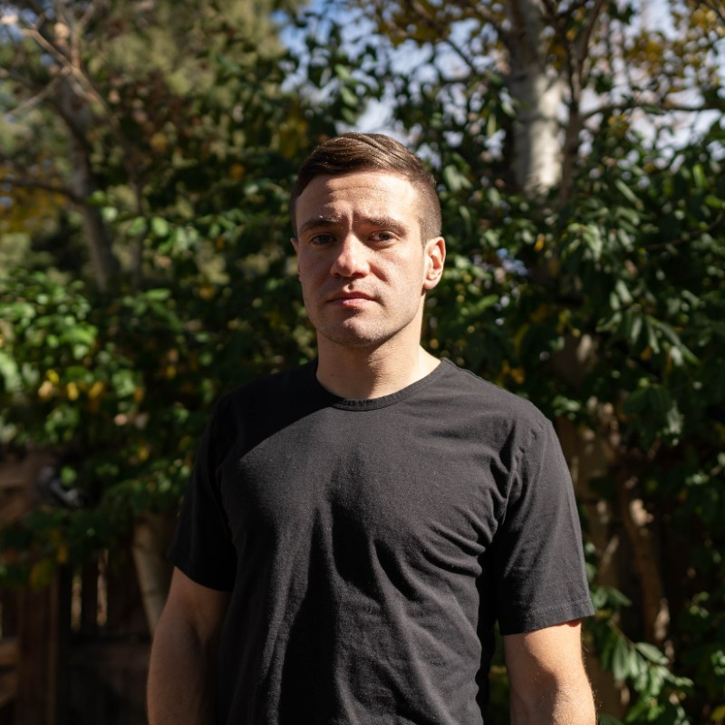

Barrett Kowalsky
Digital Project Manager & Developer-in-Training

Summary:
Barrett Kowalsky is an experienced creative producer & project manager passionate about brand design, video production, web design and development, and photography. He has over 6 years of experience managing creative & dev teams, building client relationships, and producing exceptional work. He has previously worked at Sanborn, AMP Agency, and Avex Designs. Currently, Barrett is taking multiple programming courses, and is building this particular portfolio under the instruction of Dr. Angela Yu's "The Complete 2023 Web Development Bootcamp" course on Udemy.
Work Experience
Avex Designs
Sr. Project Manager - Mar. 2019 - Nov. 2022
-
Lead complex design and web projects from discovery through execution and delivery.
-
Manage cross functional teams of designers, engineers, strategists, analysts, and junior PMs.
-
Ship web projects on various platforms such as Shopify Plus, Contentful, and WordPress.
-
Maintain profit margins of 40% or better on all projects.
-
Create, document, and roll out internal processes to organization via Notion.
-
Draft all outgoing project documentation and facilitate handoff.
AMP Agency
Project Manager - Aug. 2017 - Mar. 2019
-
Manage social and digital workstreams across multiple brands, campaigns, and projects.
-
Produce 360 campaigns & video productions in close collaboration with creative, account, and strategy teams.
-
Accurately resource creative teams across all offices: NYC, Boston, and freelance pool.
-
Develop agency-wide processes and documentation alongside Sr. PM.
-
Lead monthly social creative content development. Assist with RFP work for prospective new business.
Sanborn
Creative Producer (Contract) - Feb. 2017 - Jun. 2017
-
Manage agile team designing and developing an iOS application.
-
Draft copy, test user flows, conduct QA testing, and submit for app store review.
-
Create case study pages and proposal decks for prospective clients.
-
Aided video production team with planning, setup, and breakdown for client productions.
-
Lead a branding project for a clients new business venture and served as primary point of contact.
Education
Boston University
B.A. in Psychology (Graduated May 2016)
Skills
- Scoping
- Figma & Adobe
- Timelines, Schedule, & Roadmaps
- Quality Assurance
- Agile & Waterfall
- JIRA
- Asana
- Monday.com
- Notion
- Contentful
Other Interests & Tools
Contact
LinkedIn
Github